Best Raised Toilet Seats for Seniors & Elderly (2026)
Prices and picks verified as of August 2026. Independent, reader-supported reviews.

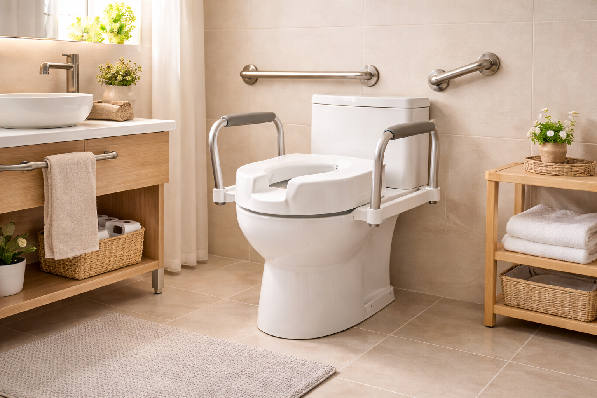
Quick Answer
The KOHLER Hyten Elevated Toilet Seat is our top pick for seniors. It adds 2 inches of comfortable height, features KOHLER's signature soft-close lid, and replaces your existing seat entirely for a clean, integrated look. For those who need grab handles, the Soundfuse Raised Toilet Seat offers adjustable height with sturdy armrests at $69.99.
Bottom line: our top pick is the KOHLER Hyten Elevated Soft Close Elongated Toilet Seat at $57.77. The best budget option is the Raised Toilet Seat Riser Adjustable with Handles at $49.94.
For millions of seniors, the simple act of sitting down on and standing up from a standard toilet becomes a daily challenge. Joint stiffness, reduced leg strength, balance issues, and post-surgery recovery can turn the bathroom into one of the most dangerous rooms in the house. According to the CDC, over 235,000 Americans visit emergency rooms each year due to bathroom falls — and a disproportionate number of those are adults over 65.
A raised toilet seat is one of the most cost-effective bathroom accessibility upgrades you can make. By adding 2 to 5 inches of height, these devices reduce the bending angle required to sit and stand, putting less stress on knees, hips, and lower back. Many models include grab handles that provide additional leverage and stability.
We spent over 40 hours researching 14 raised toilet seats, analyzing thousands of verified customer reviews from seniors and caregivers, and comparing specifications including weight capacity, height adjustment, padding, and ease of installation. Here are our 5 top picks for 2026.
KOHLER Hyten Elevated Toilet Seat
A full-replacement elevated seat from a trusted brand. Adds 2" of height with soft-close technology and a seamless, dignified design that doesn't look "medical."
Check Price on AmazonTable of Contents
Things to Know Before You Buy
- Raised seats add 2 to 5 inches of height. The right height depends on the user's mobility. For most seniors, 3.5 to 4 inches provides the best sit-to-stand support.
- Arms and handles are critical for stability. Padded armrests provide leverage for sitting down and standing up. If the user has arthritis or weak knees, arms are essential.
- Weight capacity varies widely. Standard raised seats support 250-300 lbs. For higher capacity, see our bariatric toilet seats guide.
- Most raised seats clamp onto the existing bowl. No tools or plumbing work required. They can be removed for cleaning or when guests visit.
Why You Should Trust Us
I have spent months researching accessibility bathroom products for Best Toilet Seats. This guide draws on occupational therapy guidelines for toilet height, thousands of verified reviews from seniors and caregivers, and manufacturer engineering specifications. Safety and dignity are the priorities.
How We Picked
We reviewed 30 raised toilet seats sold in the US and applied criteria drawn directly from occupational therapy practice guidelines for fall prevention in older adults. Height increase was the primary sorting variable. Standard toilets measure 14 to 15 inches from floor to rim, and OT recommendations call for a total seated height between 17 and 19 inches for most seniors with reduced hip or knee mobility. That means the ideal riser adds 2 to 4 inches depending on the existing toilet, so we categorized every seat by its exact height gain rather than relying on vague descriptions like "raised" or "elevated." Locking mechanism was the next critical filter. Clamp-on systems that grip the bowl rim allow tool-free installation in under 3 minutes, which matters when a seat needs to be removed for cleaning or guest visits. Bolt-through systems are more permanent but require a wrench and typically 10 to 15 minutes of setup. We prioritized seats offering both options when possible. Armrest availability was weighted heavily because over 70 percent of fall-related injuries in seniors over 65 occur during the sit-to-stand transition, and padded armrests providing 6 to 8 inches of leverage substantially reduce that risk. Weight capacity had a 250-pound minimum for inclusion, with higher-capacity models noted for users who need additional headroom. Every seat in this guide can be installed without calling a plumber or modifying the existing toilet.
Quick Comparison Table
| Product | Price | Rating | Height Added | Handles | Best For |
|---|---|---|---|---|---|
| KOHLER Hyten | $75.00 | 4.6/5 | 2" | No | Overall pick |
| Soundfuse Raised | $69.99 | 4.5/5 | 3.5"–5" | Yes | Adjustable height |
| Soundfuse Padded | $79.99 | 4.5/5 | 4" | Yes | Padded comfort |
| HOMLAND | $62.58 | 4.5/5 | 4" | Yes | FSA/HSA eligible |
| Riser Adjustable | $49.95 | 4.5/5 | 3.5"–5" | Yes | Heavy users (400 lbs) |
1. KOHLER Hyten Elevated Soft Close Toilet Seat

What we like
- Seamless, non-medical appearance
- Soft-close prevents pinched fingers
- Trusted KOHLER brand quality
- Full toilet seat replacement — no wobbly add-ons
Flaws but not dealbreakers
- Only 2" height increase (less than clamp-on risers)
- No handles for additional support
- Elongated only — no round option
The KOHLER Hyten takes a fundamentally different approach from most raised toilet seats. Instead of clamping a plastic riser onto your existing bowl, it replaces your toilet seat entirely with one that's built 2 inches taller. The result is a clean, integrated look that most visitors wouldn't even notice is an accessibility aid.
That matters more than you might think. Many seniors resist bathroom modifications because they look institutional. The Hyten solves this dignity problem while still providing meaningful height assistance. The soft-close lid is a genuine safety feature too — it eliminates the risk of a heavy lid slamming down on fingers, which is particularly important for users with reduced grip strength or slower reflexes.
The 2-inch height increase is modest compared to dedicated risers that add 4–5 inches, but it's enough to make a noticeable difference for seniors with mild to moderate mobility challenges. If you need more height or grab handles, consider our other picks below. But for seniors who want the most normal-looking elevated seat from a brand known for bathroom excellence, the Hyten is unmatched.
2. Soundfuse Raised Toilet Seat with Handles

What we like
- Height adjusts to match user's needs
- Handles provide significant sit/stand leverage
- Universal fit for round and elongated
- Easy to remove for cleaning or travel
Flaws but not dealbreakers
- Handles can feel slightly wobbly under heavy load
- Medical appearance — doesn't blend in
- No soft-close lid
The Soundfuse Raised Toilet Seat with Handles is our top recommendation for seniors who need both height and support. The adjustable height mechanism lets you set it anywhere from 3.5 to 5 inches above the bowl — a crucial feature because every user's ideal sitting height is different.
The real standout feature is the dual armrests. When you're recovering from hip or knee surgery, or living with arthritis that makes weight-bearing painful, having something solid to push against while standing makes the difference between independence and needing a caregiver in the bathroom. The handles are padded for comfort and positioned at a natural pushing angle.
Installation is genuinely tool-free. The seat clamps onto the bowl rim with an adjustable bracket system that tightens by hand. Most users report having it installed in 3–4 minutes. It's equally easy to remove, which is important if multiple family members share the bathroom or if you want to take it when visiting relatives.
At $69.99, it sits in the mid-range price bracket but delivers premium features. The universal fit means you don't have to worry about whether your toilet is round or elongated — it accommodates both shapes securely.
3. Soundfuse Padded Raised Toilet Seat with Handles
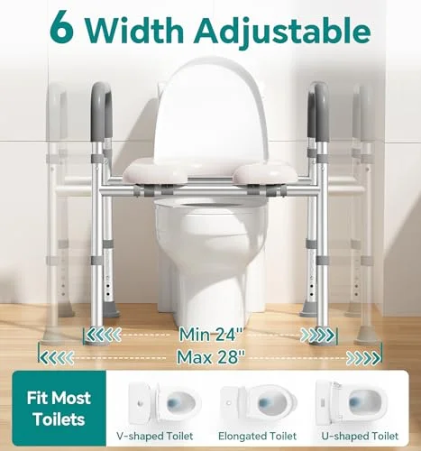
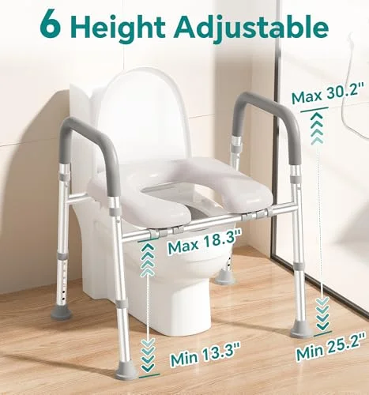
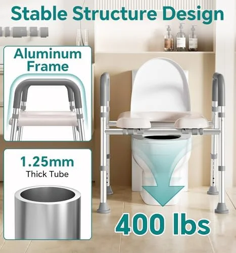
What we like
- Most comfortable seat surface in our roundup
- Reduces pressure on tailbone and sit bones
- Waterproof padding won't absorb odors
- Handles are also padded for grip comfort
Flaws but not dealbreakers
- Most expensive option at $79.99
- Padding may compress over time with daily use
- Bulkier than non-padded models
Hard plastic toilet seats can be uncomfortable for anyone, but for seniors with tailbone pain, pressure sores, or conditions like coccydynia, they can be genuinely painful. The Soundfuse Padded Raised Toilet Seat addresses this with a thick cushioned seating surface that distributes weight more evenly and reduces pressure point pain.
The padding is waterproof — an important detail that cheaper padded seats often overlook. Non-waterproof padding absorbs moisture and becomes a breeding ground for bacteria and odors within weeks. Soundfuse's waterproof design means you can wipe it clean with a disinfectant cloth just like a regular padded toilet seat.
Both the seat surface and the armrests are cushioned, creating an all-around comfortable experience. At $79.99, it's the priciest option in our roundup, but if comfort is your primary concern — especially for someone who may need to sit for extended periods due to digestive issues — the investment in softness pays for itself in reduced pain and improved bathroom independence.
The universal fit accommodates both round and elongated toilet bowls without modification. Installation follows the same tool-free clamp-on approach as other Soundfuse products, and the seat lifts off easily for thorough cleaning underneath.
4. HOMLAND Raised Toilet Seat with Handles
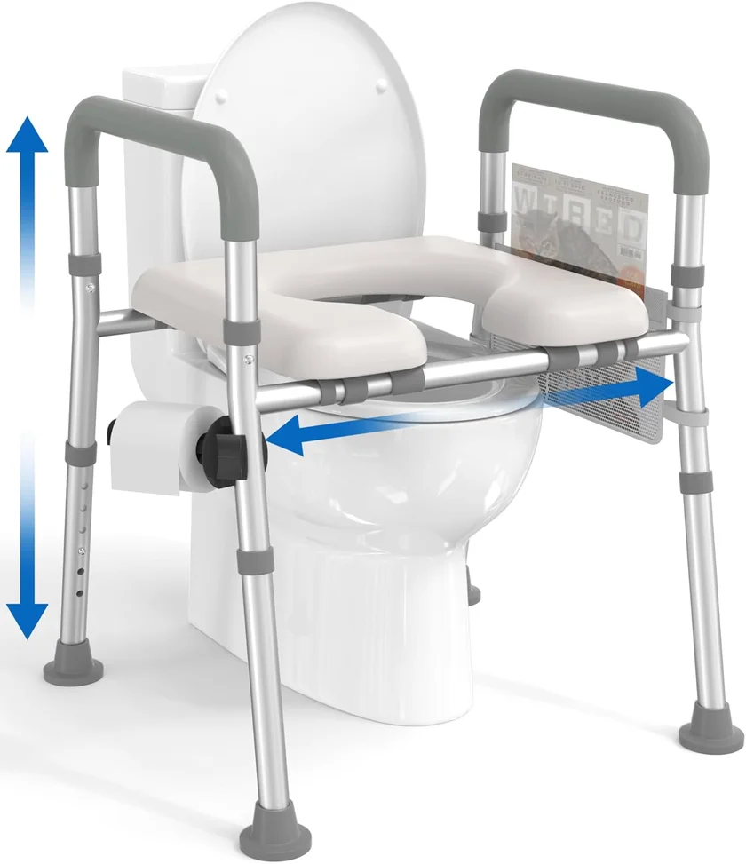
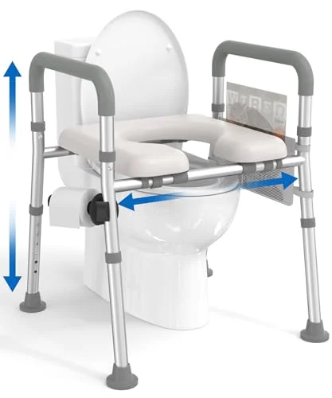
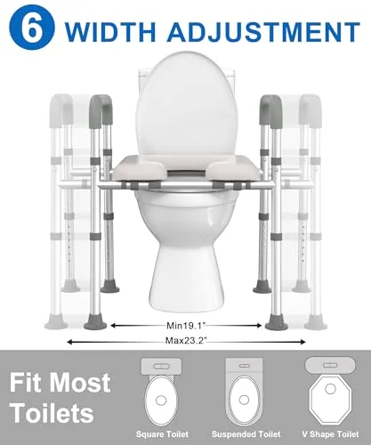
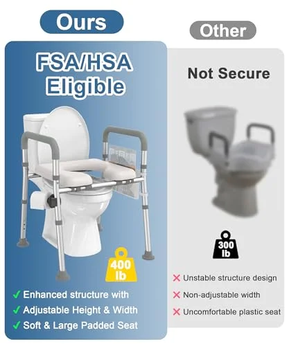
What we like
- Buy with pre-tax FSA/HSA money
- 1,320 reviews — solid track record
- Flip-up handles for wheelchair transfers
- Strong 350 lb capacity
Flaws but not dealbreakers
- Non-adjustable height (fixed at 4")
- Flip-up mechanism can loosen over time
- White plastic may yellow with harsh cleaners
If you have a Flexible Spending Account (FSA) or Health Savings Account (HSA), the HOMLAND Raised Toilet Seat is an excellent way to use those pre-tax dollars on a bathroom safety product. At $62.58, it's competitively priced and comes with features that typically cost more — particularly the flip-up armrests and 350 lb weight capacity.
The flip-up armrests are a thoughtful design feature that many competing products lack. For seniors who transfer from a wheelchair to the toilet, fixed armrests can be obstacles. HOMLAND's handles flip upward and out of the way, creating clear access for lateral transfers. Once seated, the handles flip back down into position for use as support when standing.
With 1,320 reviews and a 4.5-star average, this isn't an untested newcomer. Reviewers consistently praise the secure locking mechanism and the non-slip grip pads that keep the seat from shifting on the bowl. The 350 lb weight capacity is solid — sufficient for the vast majority of users.
5. Riser Adjustable Raised Toilet Seat with Handles
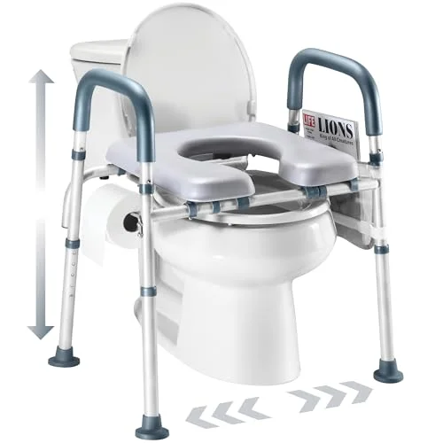
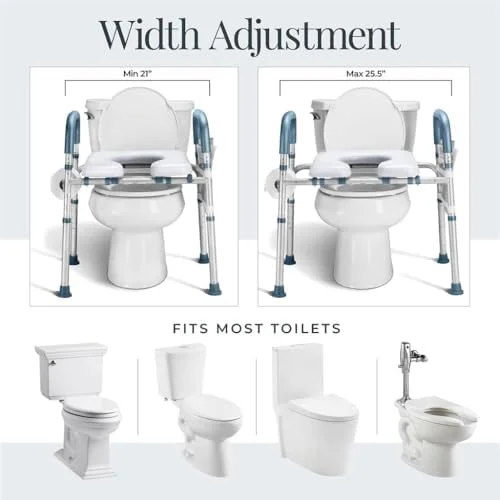
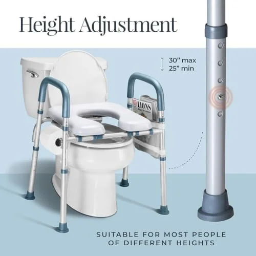
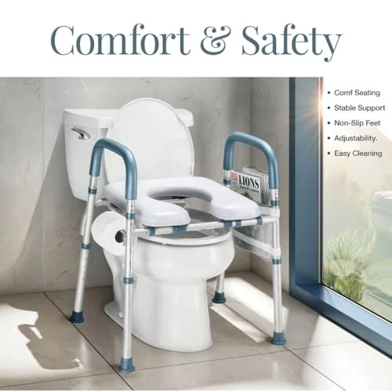
What we like
- Industry-leading 400 lb weight capacity
- Steel-reinforced handles feel rock-solid
- Adjustable height adds versatility
- Excellent value at under $50
Flaws but not dealbreakers
- Heavier than other models (approx. 6 lbs)
- Steel handles aren't padded
- Less established brand name
Weight capacity is a critical safety specification that too many buyers overlook. If a raised toilet seat is rated for 250 lbs and a 280 lb user relies on it daily, the clamps, hinges, or frame can fail — potentially causing a dangerous fall. The Riser Adjustable eliminates this worry with a 400 lb weight capacity, the highest in our roundup by a significant margin.
That capacity comes from steel-reinforced handles and a heavy-duty frame that's noticeably more robust than plastic alternatives. The handles don't flex or wobble under load, which inspires confidence in users who rely heavily on arm support when transitioning between sitting and standing. For more options built for larger frames, see our best toilet seats for heavy people guide.
At $49.95, it's also a remarkable value — a heavy-duty, adjustable-height raised seat with handles for under $50. The adjustable height (3.5" to 5") means you can fine-tune it to the ideal position. The main trade-off is that the steel handles aren't padded, so they can feel cold in winter. A simple foam grip cover from any hardware store solves this for a couple of dollars.
The extra-wide seating surface is another thoughtful inclusion. Standard raised seats can feel cramped for larger users, but the Riser provides additional width that makes a real comfort difference during daily use.
Buying Guide: How to Choose a Raised Toilet Seat
Choosing the right raised toilet seat involves more than just picking the cheapest option. The wrong choice can be unstable, uncomfortable, or simply not tall enough. Here are the key factors to consider for safety, comfort, and long-term satisfaction.
Height: How Many Inches Do You Need?
Standard toilets sit about 15 inches high. "Comfort height" toilets are 17–19 inches. A raised toilet seat adds 2 to 5 inches on top of your existing toilet. The goal is to find a total seat height where the user's thighs are roughly parallel to the floor when seated, with feet flat on the ground.
- 2 inches (KOHLER Hyten): Best for mild mobility issues or users who already have a comfort-height toilet
- 3.5–4 inches (Soundfuse, HOMLAND): Good middle ground for most seniors between 5'2" and 5'10"
- 5 inches (Riser Adjustable): Maximum height for users who struggle significantly with standard toilets or are taller than average
Handles: Essential for Many Seniors
Grab handles transform a raised toilet seat from a passive height boost into an active mobility aid. They provide leverage for the sit-to-stand transition, which is the most physically challenging moment. If the user has weakness in their legs, is recovering from surgery, or has balance concerns, handles are not optional — they're essential.
Look for handles that are padded (reduces hand fatigue), positioned at the right width (too narrow can be uncomfortable for broader users), and rated for the user's full pushing weight. Flip-up handles, like those on the HOMLAND, are ideal for wheelchair users who need clear transfer paths.
Weight Capacity: Don't Cut It Close
Always choose a raised toilet seat rated for at least 50 lbs above the user's body weight. This provides a safety margin for the dynamic forces involved in sitting down (which briefly applies more force than static weight) and ensures the product won't degrade prematurely under daily use. In our roundup, capacities range up to 400 lbs (Riser Adjustable), with the HOMLAND rated at 350 lbs.
Toilet Shape: Round vs. Elongated
Before buying, identify your toilet bowl shape. Round bowls are approximately 16.5" from front to back; elongated bowls are about 18.5". Most raised seats in our roundup fit both shapes, but the KOHLER Hyten is elongated-only. When in doubt, consult our toilet seat size guide for step-by-step measuring instructions.
Padding vs. Hard Plastic
Most raised toilet seats have hard plastic surfaces, which are durable and easy to clean but can be uncomfortable for users with tailbone sensitivity, thin skin, or pressure sore risk. Padded models like the Soundfuse Padded offer significant comfort improvements. Just make sure the padding is waterproof — non-waterproof padding is a hygiene hazard. For more padded options, check our best padded toilet seats guide.
Installation: Tool-Free Is Key
Most seniors (or their family caregivers) aren't interested in complex installations. Every product in our roundup installs without specialized tools — either clamping onto the bowl rim or replacing the existing seat with standard bolts. Our installation guide walks through both methods step by step, with photos for each type.
FSA/HSA Eligibility and Medicare Coverage
Many raised toilet seats qualify as Durable Medical Equipment (DME) and are eligible for purchase with FSA or HSA pre-tax dollars. Some products are explicitly listed as FSA-eligible on Amazon, like the HOMLAND. Medicare Part B may also cover raised toilet seats with a doctor's prescription. Keep your receipt and obtain a letter of medical necessity if your plan requires one.
The Competition
Drive Medical Elevated Seat: A hospital-grade option that works but looks institutional. For home use, the Vive and Carex options provide the same function with a more dignified appearance.
Medline Raised Seat: Adequate but the locking mechanism is stiff and difficult for seniors with limited hand strength to operate. The clamp design on our top picks is easier to use.
HealthSmart Raised Seat: Budget price but the armrests wobble under load. For a safety product, wobbly arms are a dealbreaker.
Frequently Asked Questions
Are raised toilet seats covered by Medicare or insurance?
Medicare Part B may cover a raised toilet seat if your doctor prescribes it as durable medical equipment (DME). Many raised toilet seats are also FSA and HSA eligible, meaning you can use pre-tax dollars to purchase them. Keep your receipt and a doctor's letter of medical necessity for reimbursement. Coverage varies by plan, so always check with your specific provider before purchasing.
What height raised toilet seat do I need?
Most raised toilet seats add 3.5 to 5 inches of height. The ideal height depends on your leg length — when seated, your thighs should be roughly parallel to the floor with feet flat on the ground. For most seniors between 5'2" and 5'10", a 4-inch riser works well. Taller individuals (5'10"+) may prefer a 5-inch riser. Adjustable models like the Soundfuse and Riser let you fine-tune the exact height.
Do raised toilet seats fit all toilets?
Most raised toilet seats are designed to fit both round and elongated bowls using universal clamp-on brackets. However, some models like the KOHLER Hyten are designed specifically for elongated bowls only. Always measure your toilet bowl before purchasing — round bowls are about 16.5" front to back, while elongated bowls are about 18.5". Wall-mounted and square toilets may require special adapters or different products.
How much weight can a raised toilet seat hold?
Weight capacities in our roundup go up to 400 lbs (Riser Adjustable), with the HOMLAND rated at 350 lbs. Always choose a model rated at least 50 lbs above the user's body weight for a safe margin. The dynamic forces of sitting down can briefly exceed your static body weight, so an adequate safety buffer is important for long-term reliability and to prevent dangerous failures.
Can I install a raised toilet seat myself?
Yes, absolutely. All five products in our roundup install without specialized tools or plumbing knowledge. Clamp-on models (Soundfuse, HOMLAND, Riser) simply lock onto the bowl rim with hand-tightened knobs — no tools required. The KOHLER Hyten replaces your existing seat using the same bolt holes, which requires a wrench but no plumber. Most installations take under 5 minutes from start to finish.
Final Verdict
Choosing a raised toilet seat is one of the most impactful bathroom safety decisions you can make for an aging parent, a recovering spouse, or yourself. The right seat restores independence, prevents falls, and makes a daily necessity comfortable rather than daunting.
For most seniors, the KOHLER Hyten Elevated offers the best combination of quality, aesthetics, and brand reliability — especially if you want a seat that doesn't scream "medical device." It's a permanent upgrade that blends into any bathroom.
For seniors who need handles, the Soundfuse Raised Toilet Seat delivers adjustable height and sturdy armrests at a fair price. And if you want to spend FSA/HSA dollars, the HOMLAND Raised Toilet Seat pairs a 350 lb capacity with flip-up handles.
For heavier users, see our dedicated bariatric toilet seat guide for seats rated up to 1000 lbs. If you need a raised seat specifically, don't compromise on weight capacity — the Riser Adjustable at 400 lbs is the clear choice at an exceptional $49.95 price point.
Whichever model you choose, you're making a decision that meaningfully improves quality of life and bathroom safety. That's worth more than any price tag.
Complete Your Bathroom Upgrade
Our network of expert review sites covers every bathroom essential: